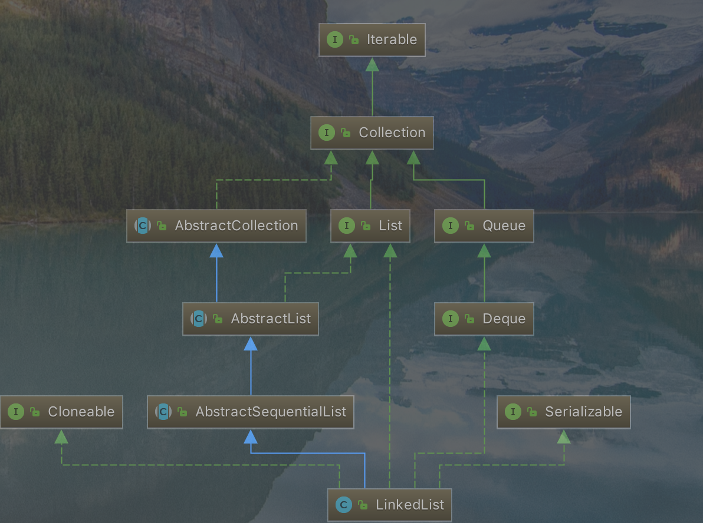

###LinkedList简介
LinkedList是基于链表的，是线程不安全的，允许为null。增删只需要修改节点指针，所以增删时间效率很高，不需要扩容，也不需要预留空间。缺点就是随机访问的时候，效率很低。
## LinkedList类关系图

从图可以看出LinkedList实现了deque。可以作为一个双端队列来使用。不支持随机访问
源码解析
1
2
3
4
5
6
7
8
9
10
11
12
13
14
15
16
17
18
19
20
21
22
23
24
25
26
27
28
29
30
31
32
33
34
35
36
37
38
39
40
41
42
43
44
45
46
47
48
49
50
51
52
53
54
55
56
57
58
59
60
61
62
63
64
65
66
67
68
69
70
71
72
73
74
75
76
77
78
79
80
81
82
83
84
85
86
87
88
89
90
91
92
93
94
95
96
97
98
99
100
101
102
103
104
105
106
107
108
109
110
111
112
113
114
115
116
117
118
119
120
121
122
123
124
125
126
127
128
129
130
131
132
133
134
135
136
137
138
139
140
141
142
143
144
145
146
147
148
149
150
151
152
153
154
155
156
157
158
159
| public class LinkedList<E>
extends AbstractSequentialList<E>
implements List<E>, Deque<E>, Cloneable, java.io.Serializable
{
transient int size = 0;
transient Node<E> first;
transient Node<E> last;
public LinkedList() {
}
public LinkedList(Collection<? extends E> c) {
this();
addAll(c);
}
private static class Node<E> {
E item;
Node<E> next;
Node<E> prev;
Node(Node<E> prev, E element, Node<E> next) {
this.item = element;
this.next = next;
this.prev = prev;
}
}
void linkLast(E e) {
final Node<E> l = last;
final Node<E> newNode = new Node<>(l, e, null);
last = newNode;
if (l == null)
first = newNode;
else
l.next = newNode;
size++;
modCount++;
}
private void linkFirst(E e) {
final Node<E> f = first;
final Node<E> newNode = new Node<>(null, e, f);
first = newNode;
if (f == null)
last = newNode;
else
f.prev = newNode;
size++;
modCount++;
}
public int indexOf(Object o) {
int index = 0;
if (o == null) {
for (Node<E> x = first; x != null; x = x.next) {
if (x.item == null)
return index;
index++;
}
} else {
for (Node<E> x = first; x != null; x = x.next) {
if (o.equals(x.item))
return index;
index++;
}
}
return -1;
}
public boolean addAll(int index, Collection<? extends E> c) {
checkPositionIndex(index);
Object[] a = c.toArray();
int numNew = a.length;
if (numNew == 0)
return false;
Node<E> pred, succ;
if (index == size) {
succ = null;
pred = last;
} else {
succ = node(index);
pred = succ.prev;
}
for (Object o : a) {
@SuppressWarnings("unchecked") E e = (E) o;
Node<E> newNode = new Node<>(pred, e, null);
if (pred == null)
first = newNode;
else
pred.next = newNode;
pred = newNode;
}
if (succ == null) {
last = pred;
} else {
pred.next = succ;
succ.prev = pred;
}
size += numNew;
modCount++;
return true;
}
}
|